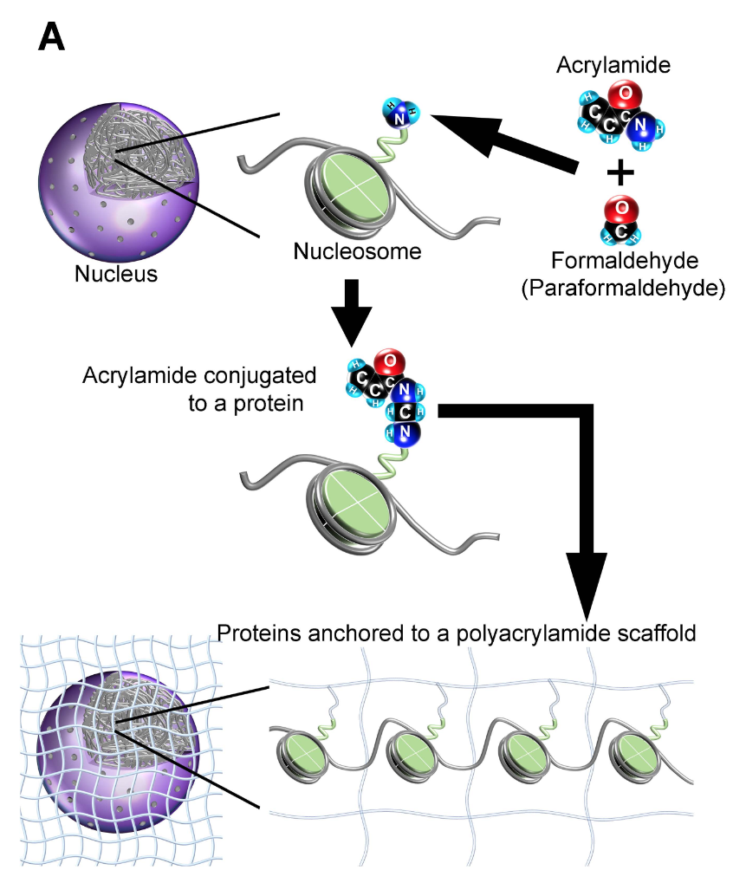

Iterative epigenomic analyses of the same single cell
https://doi.org/10.1101/2020.07.20.212969
Epigenomic measurements are typically destructive, and so prevent the identification of multiple marks at the same site in the same single cell. For example, CUT&Tag (Kaya-Okur et al. 2019; Carter et al. 2019) uses Tn5 transposase guided by an antibody to tagment DNA near the antibody binding site, which is then sequenced and mapped to determine the position of the mark in the cell.
Ohnuki et al. present an innovative new method that gets around this limitation in some interesting ways (Ohnuki et al. 2020). They embed the cell in a small hydrogel bead by first fixing the cell, then creating a polyacrylamide gel matrix by adding acrylamide and paraformaldehyde. Acrylamide reacts with primary amines, especially at the N-terminus of proteins. There are many exposed primary amines in the nucleosome as they’re present on the ends of the histone tails, and so the nucleosome should be nicely anchored in one spot and embedded in a 3D matrix covering the entire cell. Figure 1 shows nicely how this works:

This is very similar to methods used in STARmap (Wang et al. 2018), where they do reverse transcription with amine-modified nucleotides and then similarly polymerize with acrylamide to embed the cell in a hydrogel, anchoring the cDNAs in place in the gel.
Next, random primers containing a UMI and a ligation adapter sequence are annealed to gDNA and extended using a DNA polymerase. This creates a copied DNA molecule with a free 3’ OH end which can be used for subsequent ligation. The primers are able to bind to the template DNA by first heating the gel bead to 94ºC, which would denature the strands, and then incubating on ice to bring down the temperature and allow the primer and gDNA to anneal.
Antibodies conjugated with a DNA probe containing an antibody-specific barcode and a ligation adapter sequence are then added to the gel bead and allowed to diffuse and bind to their epitope. The authors show results for several different antibodies, including H3K27ac, H3K27me3, Med1, and 5-hydroxymethylcytosine. The antibody-conjugated DNA oligo and copied gDNA are ligated together in-situ using T4 ligase, then washed out and collected.
The ligated DNA products are then amplified using MALBAC, adding a second cell-specific barcode sequence. MALBAC (Multiple Annealing and Looping Based Amplification Cycles) is a near-linear amplification method sometimes used for low-input DNA amplification. MALBAC amplification products have complimentary DNA ends, causing them to loop into a circle preventing further copies being made from that template. This makes the method closer to a linear rather than exponential amplification, and is useful for the amplification of low-input DNA as there will be less bias towards molecules that happen to be amplified early in the process.
Once the antibody is washed out of the gel bead the whole process can be started again by adding new DNA polymerase, new conjugated antibody, and repeating the ligation. This allows the same site within the same cell to be assayed multiple times. In the paper the authors show results for four consecutive measurements from the same cell, but also show data for up to 100 annealing cycles. With a high concentration of acrylamide, most cellular proteins are retained in the gel even after 100 cycles, suggesting that many repeated measurements could potentially be made from the same cell.
The authors were also able to show repeated measurement of the same mark in the same cell (eg, H3K27ac or H3K27me3) gave similar results, supporting the idea that the same site can be repeatedly measured in the same cell. Overall I think this is a very interesting, creative new method and it will be exciting to see how it can be improved and developed further over time. This could prove a very powerful method to profile bivalent chromatin domains, and to start to quantify the combination of chromatin marks that exist at a single site in a single cell.
Perspectives
Since the structure of the cell and nucleus is retained, I wonder if it would be possible to collect spatial coordinates for each sequenced DNA molecule. Perhaps this could be done by performing some kind of FISH method (eg, MERFISH or SEQFISH) on the ligation UMI in-situ (Moffitt et al. 2018; Eng et al. 2019). The Illumina-sequenced molecules could then be coupled to a spatial position in the cell by sequencing both the ligation UMI and the gDNA sequence. This could also be a way of scaling up the method, if you could add many cells to the same gel bead and determine which molecules came from the same cell based on the spatial position of ligation UMIs.
I also wonder if antibodies could be multiplexed together and demultiplexed using the antibody-specific barcodes (rather than doing iterative measurements with different antibodies). You would still have the problem then of only being able to measure a single site in a single cell, but if you chose antibodies with little overlap in their target positions and measured many cells, this might not be an issue. This could help scale the method to many cells, as I’m sure the iterative aspect of the method would be more difficult to scale than a single-iteration method.
References
Carter, Benjamin, Wai Lim Ku, Jee Youn Kang, Gangqing Hu, Jonathan Perrie, Qingsong Tang, and Keji Zhao. 2019. “Mapping Histone Modifications in Low Cell Number and Single Cells Using Antibody-Guided Chromatin Tagmentation (ACT-seq).” Nat. Commun. 10 (1): 3747. https://doi.org/10.1038/s41467-019-11559-1.
Eng, Chee-Huat Linus, Michael Lawson, Qian Zhu, Ruben Dries, Noushin Koulena, Yodai Takei, Jina Yun, et al. 2019. “Transcriptome-Scale Super-Resolved Imaging in Tissues by RNA seqFISH+.” Nature, March, 1. https://www.nature.com/articles/s41586-019-1049-y.
Kaya-Okur, Hatice S, Steven J Wu, Christine A Codomo, Erica S Pledger, Terri D Bryson, Jorja G Henikoff, Kami Ahmad, and Steven Henikoff. 2019. “CUT&Tag for Efficient Epigenomic Profiling of Small Samples and Single Cells.” Nat. Commun. 10 (1): 1930. https://doi.org/10.1038/s41467-019-09982-5.
Moffitt, Jeffrey R, Dhananjay Bambah-Mukku, Stephen W Eichhorn, Eric Vaughn, Karthik Shekhar, Julio D Perez, Nimrod D Rubinstein, et al. 2018. “Molecular, Spatial and Functional Single-Cell Profiling of the Hypothalamic Preoptic Region.” Science, November. http://dx.doi.org/10.1126/science.aau5324.
Ohnuki, Hidetaka, David J Venzon, Alexei Lobanov, and Giovanna Tosato. 2020. “Iterative Epigenomic Analyses in the Same Single Cell.” bioRxiv, July, 2020.07.20.212969. https://www.biorxiv.org/content/10.1101/2020.07.20.212969v1.
Wang, Xiao, William E Allen, Matthew A Wright, Emily L Sylwestrak, Nikolay Samusik, Sam Vesuna, Kathryn Evans, et al. 2018. “Three-Dimensional Intact-Tissue Sequencing of Single-Cell Transcriptional States.” Science, June. http://dx.doi.org/10.1126/science.aat5691.